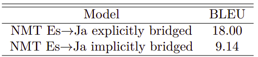

Multilingual Google's NMT
GNMT stands for “Google Neural Machine Translation” which is a bilingual machine translation architecture that was discussed before in this post: GNMT. Here, we are going to discuss how they extended the bilingual nature of the GNMT model to be multilingual. The Multilingual GNMT architecture, as seen in the following figure, was proposed in 2016 by the Google Research team and published in this paper: Google’s Multilingual Neural Machine Translation System: Enabling Zero-Shot Translation. The official code for this paper can be found in the TensorFlow’s official GitHub repository: TensorFlow/GNMT.

The researchers of this paper have found out that this architecture, which is used mainly for bilingual translation, can be extended to multiple languages using a simple method that doesn’t change anything in the architecture. The method they used was just to add an artificial token to the input sequence to indicate the required target language. That’s it!! All other parts of the system like encoder, decoder, attention mechanism, and shared WordPiece vocabulary stayed exactly the same.
Note:
This paper was the first paper to validate the use of true multilingual translation using a single encoder-decoder model. That’s why some consider it the founding basis for Multilingual NMT systems.
Architecture
The multilingual GNMT model architecture is identical to the GNMT model as shown below with only one addition which is to add an artificial token at the beginning of the input sentence to indicate the required target language. In this example, the token $\left\langle 2es \right\rangle$ indicates that the target sentence is in Spanish. Also, the source sentence is reversed as a processing step.
To be able to make use of multilingual data within a single system, they proposed adding an artificial token at the beginning of the input sentence to indicate the target language. For instance, to translate to Spanish (from any language), the $\left\langle 2es \right\rangle$ token should be added to the beginning of the source sentence like so:
\[\left\langle 2es \right\rangle\ Hello,\ how\ are\ you? \rightarrow Hola,\ ¿cómo\ estás?\]Instead of:
\[Hello,\ how\ are\ you? \rightarrow Hola,\ ¿cómo\ estás?\]Very Important Note:
When training, they didn’t specify the source language. Not specifying the source language is simpler, and can handle input with code-switching (as discussed later. Also, context provides enough language evidence to produce the correct translation when there are two words with the same spelling in two different source languages that have different meanings.
Data
In this paper, they trained the model on publicly-available datasets along with Google-internal production datasets. The datasets used for most of the experiments performed in this paper were:
-
WMT’14 English(En)→French(Fr).
-
WMT’14 English→German(De).
-
Internal dataset English↔Japanese(Ja).
-
Internal dataset English↔Korean(Ko).
-
Internal dataset English↔Spanish(Es).
-
Internal dataset English↔Portuguese(Pt).
They used a shared WordPiece model of all the source and target data with $32,000$ word pieces. They used newstest2014 and newstest2015 as test sets. They used a combination of newstest2012 and newstest2013 as the development set.
Results
The training protocols used here are mostly identical to the GNMT. The only thing changed was that they used larger batch sizes with a slightly higher initial learning rate to speed up the convergence of these models.
Note:
In the paper, they compared uniform batching (each batch has one language-pair) and mixed batching (each batch has more than one language- pair) and they found out that mixed batching significantly improve efficiency of the serving system.
In training, they applied the multilingual GNMT in several different configurations: Many-to-One, One-to-Many, and Many-to-Many. And to measure the influence of varying amounts of training data per language pair, they explored two strategies:
-
Oversampling: where they over-sampled the data from all language pairs to be of the same size as the largest language pair
-
No Oversampling: where they mix the data as is without any change.
Many-to-One
Here, the multilingual GNMT have multiple source languages and a single target language. Since there is only a single target language, no additional source token is required. In this part, they performed three sets of experiments:
- They combined German→English and French→English to train a multilingual GNMT and compared it to two single bilingual models trained independently.
- They combined Japanese→English and Korean→English (with oversampling) and compared it to two single bilingual models trained independently.
- They combined Spanish→English and Portuguese→English (with oversampling) and compared it to two single bilingual models trained independently.
All results presented above shows that multilingual GNMT outperforms the baseline single systems despite the fact that all of the models have the same architecture and number of parameters.
One-to-Many
Here, the multilingual GNMT have a single source language and multiple target languages. Here, they prepended the input with an additional token to specify the target language. As before, they performed three sets of experiments:
- They combined English→German and English→French to train a multilingual GNMT and compared it to two single bilingual models trained independently.
- They combined English→Japanese and English→Korean(with oversampling) and compared it to two single bilingual models trained independently.
- They combined English→Spanish and English→Portuguese (with oversampling) and compared it to two single bilingual models trained independently.
All results presented above shows that multilingual GNMT outperforms the baseline single systems in some cases but not always.
Note:
Based on the first table, The model with no oversampling achieves better results on the larger language (English→French) compared to the smaller one (English→German).
Many-to-Many
Here, the multilingual GNMT have multiple source languages and multiple target languages. Here, they prepended the input with an additional token to specify the target language. As before, they performed three sets of experiments:
- They combined English↔German and English↔French to train a multilingual GNMT and compared it to four single bilingual models trained independently.
- They combined English↔Japanese and English↔Korean(with oversampling) and compared it to four single bilingual models trained independently.
- They combined English↔Spanish and English↔Portuguese (with oversampling) and compared it to four single bilingual models trained independently.
The results presented above show that the multilingual production models with the same model size and vocabulary size as the single language models are quite close to the baselines. The average relative loss in BLEU score across all experiments is only approximately $2.5\%$.
Large-scale Model
In this part, they tried to combine 12 language pairs having a total of $12*255M = 3B$ parameters into a single multilingual model. To achieve that, they tried a range of multilingual models starting from $255M$ (the same size as a single GNMT) up to $650M$ parameters. The following table shows the results knowing that all models were over-sampled:
The table above shows that multilingual models are on average worse than the bilingual models and the average difference gets smaller when going to larger multilingual models. However, the largest multilingual model still has about five times less parameters than the combined single models which requires roughly 1/12-th of the training time (or computing resources).
Zero-shot Translation
Zero-shot Translation is when the model is able to translate between language pairs that has never seen during training. Some call it “Implicit Bridging”; unlike “Explicit Bridging” where we translate the source language to a bridge language (usually English) and then to the target language.
To demonstrate the zero-shot performance, they build two multilingual models:
-
Model trained on (Portuguese→English and English→Spanish)... 2 pairs.
-
Model trained on (Portuguese↔English and English↔Spanish)... 4 pairs.
The following table shows the comparison of phrase-based machine translation (PBMT) system, Bilingual NMT, and Multilingual NMT on Portuguese→Spanish translation:
From the previous table, we can see that:
-
NMT system outperforms the PBMT system.
-
Both Model 1 and Model 2 can perform zero-shot translation with reasonable quality and Model 2 outperforms Model 1 by up to 3 BLEU points while having the same number of parameters.
-
The model at the last row (f) achieves that highest BLEU. This model can’t be called zero-shot since it is created by incrementally training Model 2 with a small amount of true Portuguese→Spanish parallel data.
Note:
The zero-shot translation works better when the source and target languages are from the same family; like Portuguese and Spanish. They tried zero-shot learning (implicitly bridged) with Spanish and Japanese and the result was worse as shown below:
The model at the last row had the best performance which raises an important question: what is the best way to use additional parallel data when you have multilingual GNMT? To answer this question, they trained a multilingual GNMT model on English↔{Belarusian(Be), Russian(Ru), Ukrainian(Uk)} languages which they called “Zero-shot”, then they tried to add additional Ru↔{Belarusian(Be), Ukrainian(Uk)} parallel data in two different ways:
-
Training a new multilingual model with all available parallel data mixed equally. They called this “From-scratch”.
-
Incrementally training the multilingual model on the additional parallel data. They call this “Incremental”.
The following table shows that incrementing the zero-shot models with a small amount of additional parallel data achieves almost the same results as training the model from-scratch:
Code-Switching
Code-switching is the process of forming a sentence in more than one language as shown in the following figure where we can see a sentence formed by mixing English and Hindi. Interestingly, multilingual GNMT can handle code-switching sentences despite the fact that no such code-switching samples were present in the training data.
I would love to see some examples of how the model performed on code-switching samples, but sadly they didn’t provide any. No problem, though! It still one of the best papers I have ever read. Respect!